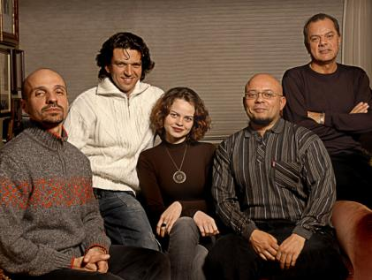

POSTS
[Bossa Nova] Delicatessen
Porto Alegre (브라질 남부) 출신의 보사노바 재즈 쿼텟.
2996년 앨범 Jazz + Bossa 로 데뷔.

이 브라질리언 친구들의 심장박동은 분명 삼바리듬일 듯
< Don’t Be That Way >
< The Very Thought of You >
< Ana Krüger 인터뷰 & Copacabana >
< Ana Krüger - Tributo a Carmen Miranda >
< Ana Krüger e Cláudio Lima - Quem é? >
공연할 때 가사는 외워주세요~